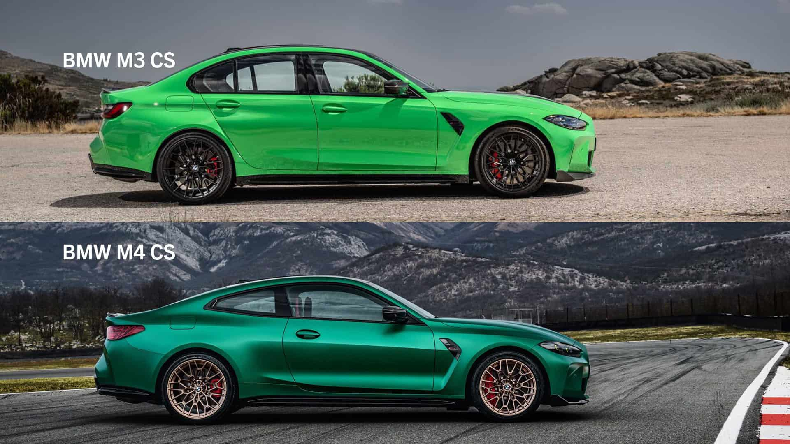
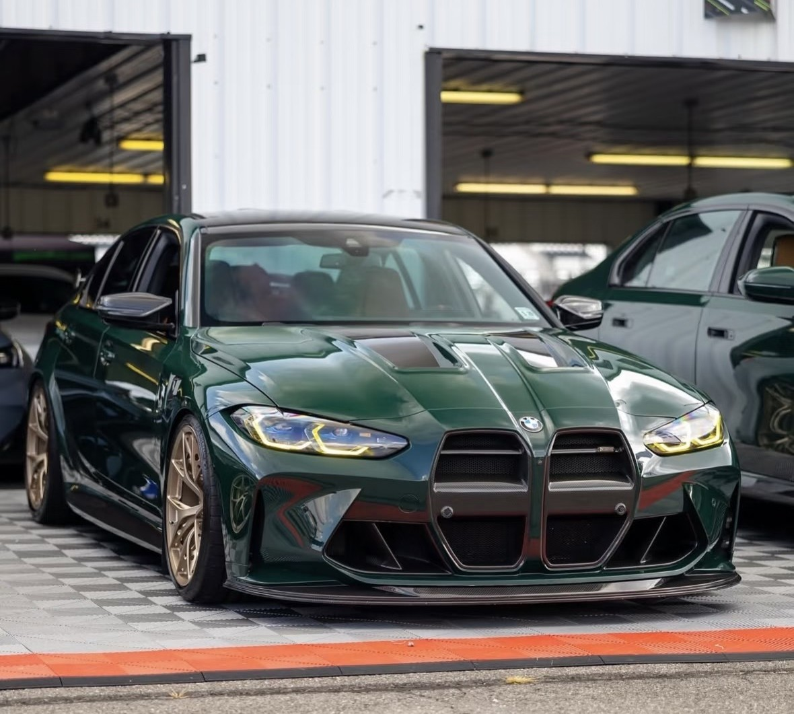
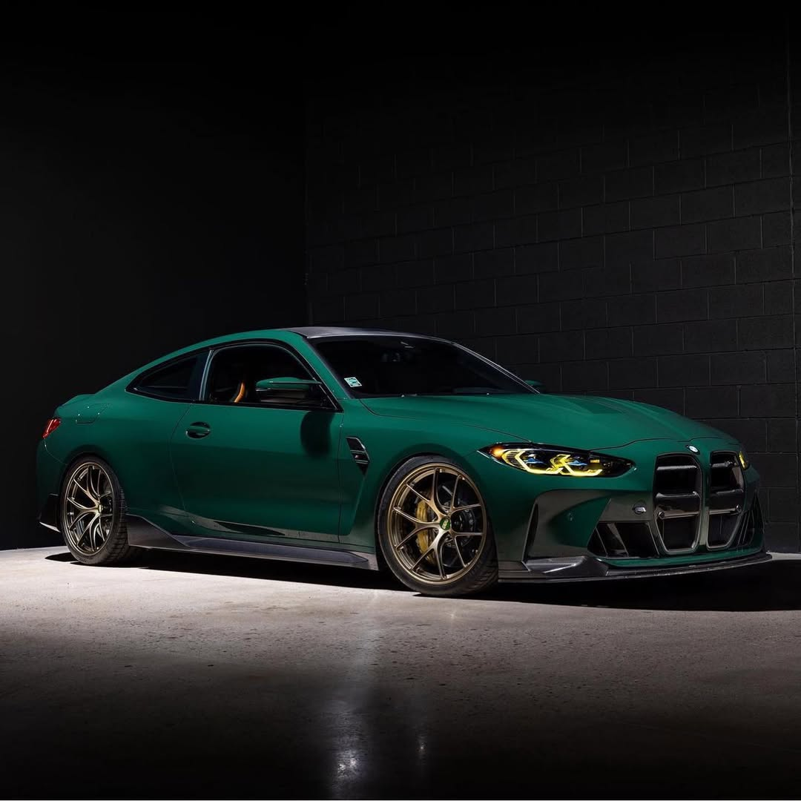
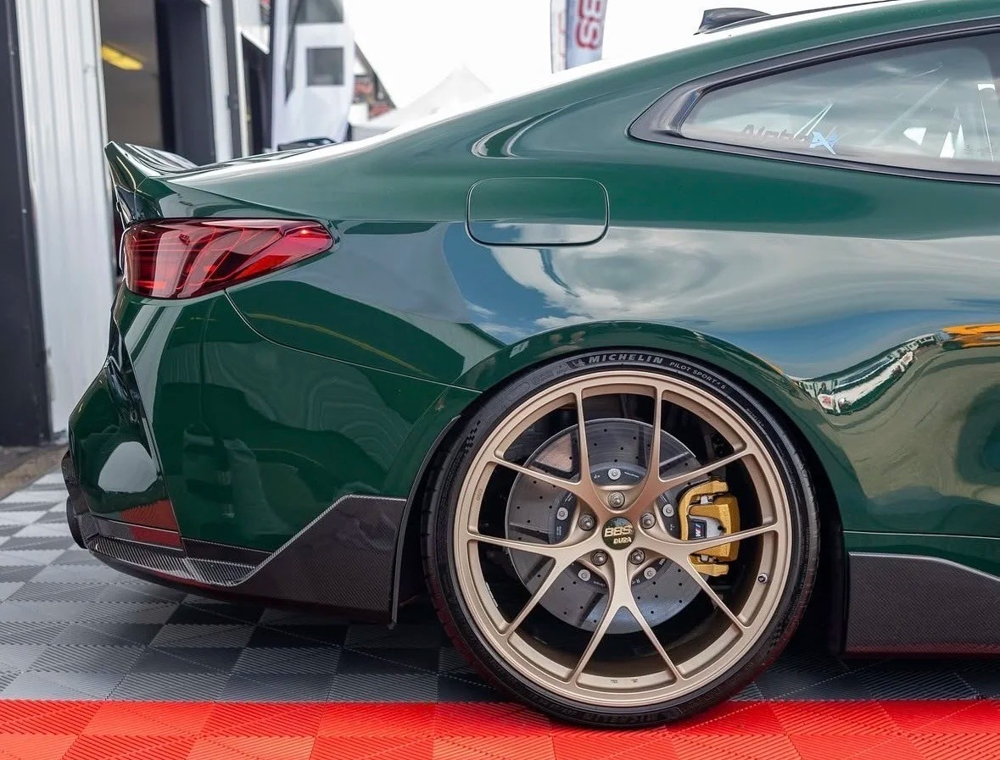
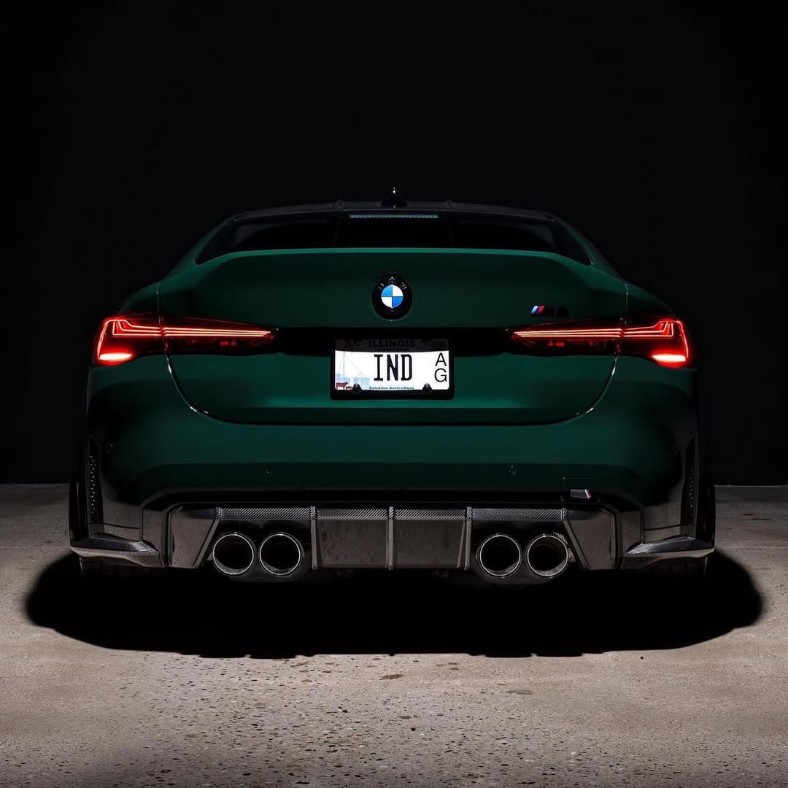
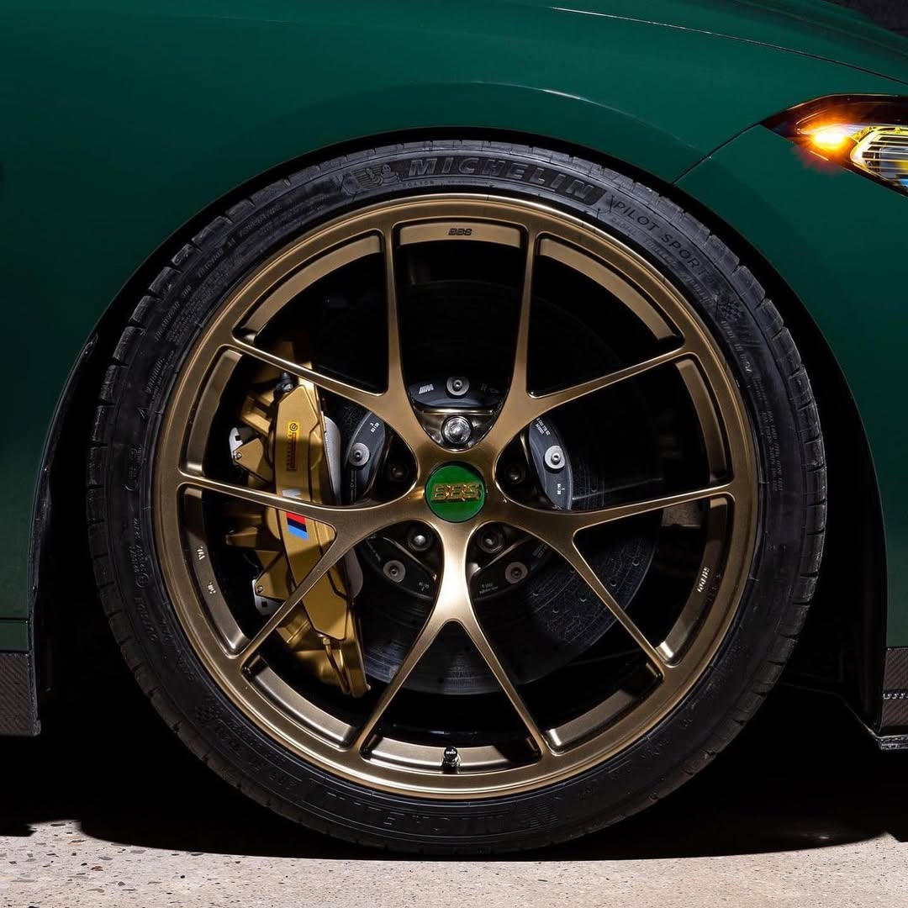

新一代宝马M3即将问世，纯电和轻混双轨并行。受限于日益严苛的排放法规，当G84在2035年完成其历史使命时，传统燃油M Power将失去合法销售的资格。
若站在拒绝电气化污染的“原教旨主义”燃油死忠派的视角来看，这一代G8X注定将成为M Power燃油绝唱。其中，G80/G81将在2027年停产。值得庆幸的是，市场对双门纯燃油性能跑车的需求依然坚挺，G82/G83的生命周期被大幅延长至2029年。
相较于M4，我更钟情于M3。抛开后者长达40年的信仰图腾加持不谈，单从设计层面来看，其外观完成度、视觉张力和整体协调性实际都高于双门的M4。
由于M3与3系共用后车门，为了容纳更宽的后轮距，设计师在后车门边缘以硬朗的线条将后翼子板向外拉伸。这种阶梯状的折角在后轮拱处产生明显的亮暗交接，增强了车身的饱满度。而M4拥有专属双门车身侧围冲压件，宽体从车门中段就开始平滑过渡至后翼子板。这种型面处理固然流畅、优雅，却也消解了性能车应有的横向膨胀感，缺乏张力。
G80的侧视结构更加方正。较高的车顶线条和霍氏拐角让车辆的视觉重心锁定在前后轴之间，紧凑而收敛。G82试图营造溜背姿态，舍弃了传统的霍氏拐角，导致C柱之后的车体显得厚重，视觉体量过大，笨重而冗长。
这一代M最具争议的双肾格栅，本质上是一种硬朗且具有侵略性的几何图形。其成败在于车身其余部分能否在设计语言上与其形成呼应。G80折线硬朗、车身方正、有棱有角，相较于G82车尾和侧面的柔和、圆润，显然更能接住其前脸的张牙舞爪，从而形成更为自洽的视觉逻辑。


我原计划毕业后购置并改装一辆现款G8X，遗憾的是彼时M3已经停产，届时只能退而选择M4。不过G82也有其优势：双门结构更适合防滚架与后排座椅轻量化改装，以及更低的坐姿、更贼的后桥反馈、更高的保值潜力、纯正的Coupe定位和衍生出CSL、GTS等车型的赛道血统。外观方面，我已在Bimmerpost和各大图文媒体中形成了自己的审美体系，并构建出一套完整的改装方案，清单如下：
车漆：British Racing Green (312)
刹车：Matte Gold M Carbon Ceramic Brakes
轮毂：Diamond Gold BBS RI-D
避震：KW V4 Clubsport
进气格栅：Vorsteiner BMW G8X carbon front grille
包围：M Performance G8X M3 / M4 Carbon Front Lip, Air Inlets, Side Skirt Attachments, Rear Winglet, Rear Diffuser, Fiber Rear Spoiler
头灯：CSL Style Yellow DRL LED Modules（针对2025中期改款后车型）
尾灯：BMW OEM M4 CSL Laser Taillights（针对2025中期改款前车型）
座椅：M Carbon Bucket Seats
后排轻量化：G8X M3/M4 Carbon Rear Seat Delete（可选）
方向盘：KMP BMW G8X M3/M4 Racing Steering Wheel（可选）
依照上述改件改装效果大概如下图：





这套改装方案遵循OEM+的改装哲学，十分耐看。其“绿配金”的色彩逻辑，既彰显经典的老钱风，又蕴含深厚的赛车历史底蕴。车漆采用的英国赛车绿呈现出独特的吸光特性：在暗光下接近黑色，低调内敛；阳光下又折射高级的金属质感。与之呼应的是小面积金色轮毂和刹车卡钳，犹如一套深色高定西装袖口不经意间露出的百达翡丽金表，在克制中彰显着极高的性能感和定制规格。此外，黄色日行灯巧妙致敬Schubert Motorsport车队M4 GT3赛车的经典元素，点亮瞬间强化了车头的凶悍感。头灯、轮毂、卡钳三者从车头至车侧勾勒一条隐藏的色彩动线，连贯性极佳。当然，采用原厂曼岛绿搭配赤金铜轮毂也是一个不错的选择。
针对这代 G8X 备受争议的进气格栅，我认为单纯依靠常规的中网改件或包围，很难完全中和掉原厂的戾气，这种设计或许只有搭配 GT3 赛车级别的夸张宽体才能相得益彰，否则在正面近距离视角下总会显得突兀。然而，Vorsteiner设计的碳纤维中网无疑是G8X最成功的破局之作。与原厂大面积平行的亮黑塑料饰条和Adro重新开模且激进的前脸套件不同，Vorsteiner在格栅中央设计了一道粗壮的横向结构，大幅增加了中网的镂空面积，压缩了其视觉高度。同时大镂空设计让格栅后巨大的散热器若隐若现，这种效仿GT3赛车的处理手法，烘托出车辆纯粹的机械性能。
V款中网的全干碳纤维材质具有吸光特性，有效抑制了原厂亮黑格栅反光造成的视觉膨胀感，搭配M Performance碳纤维套件时，车头的中网与前唇、刹车导风在材质上实现了高度统一。这种碳纤维元素并从车头一路延伸，贯穿侧裙、后风刀，直至后唇与后扰流，形成完整而和谐的空气动力学包围闭环。原厂M4的侧面略带“翘尾”趋势，略显重心不稳，MPP的前唇、侧裙、后风刀三大件在车身底部构成一条凌厉的水平线，配合KW V4 CS极低的设定，压低整体视觉重心，呈现出完美的贴地姿态。
个人并不推荐加装mpp的前杠风刀和大尾翼。M4采用的Coupe车型溜背设计，其车顶线条顺着后窗平滑下坠。高耸鸭尾的方案让后备箱盖线条得以自然延伸和偏折，更巨力量感；而悬空大尾翼在视觉上打断了流畅的溜背造型，用力过猛，略显突兀。同理，前杠风刀分体分段的设计缺少整车线条的呼应，显得过于生硬。
整体而言，这套 BMW G82 M4 的改装方案完美诠释了克制与张扬的平衡。它以深邃的高级感色彩为基调，辅以恰到好处的竞技化点缀；通过 Vorsteiner 中网与 MPP 碳纤维套件的巧妙搭配，化解了原厂设计的突兀感；最后结合底盘姿态调整并尊崇原车线条的尾部设定，塑造出一台既有赛道硬核底蕴，又兼具优雅街车格调的艺术品。它没有盲目堆砌改件，依靠严密的逻辑和极高的品位，将 G82 M4 的美学潜力发挥到了极致。